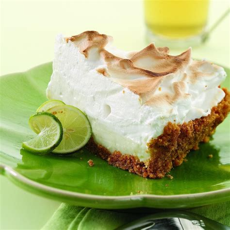

Key Lime Pie

Description:
add in description
Ingredients:
- 1 1/2 cups graham cracker crumbs
- 1/2 stick unsalted butter, melted and cooled
- 1/4 cups sugar (for crust)
- 3 large eggs, separated, whites at room temp
- 14-ounce can of sweetened condensed milk
- 1/2 cup key lime juice or fresh lime juice (about 3 limes)
- 1/3 cup sugar (for the topping)
Steps:
- Set oven to 350
- Combine crumbs, butter, sugar in bowl and then press into a 10 inch pie plate, preferably glass
- Bake for 10 min, until browned lightly, and set to cool
- Beat yolks in large bowl with condensed milk, stir in lime juice a little at a time
- Spoon filling into cooled shell, chill for at least 1 hour - put clingwrap over dish
- Set oven to 350 for topping
- Beat egg whites w/ pinch salt until it forms soft peaks
- Add sugar, tablespoon at a time, while beating until it holds hard peaks
- Spoon meringue over filling, bake in oven for 15 until peaks are golden
- Chill pie for at least 2 hours to set